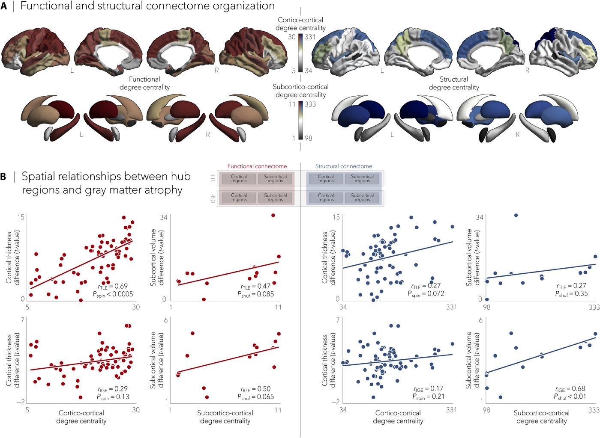

MULTIMODAL & MULTISCALE NEUROSCIENCE
Welcome to the website of the Multimodal Imaging and Connectome Analysis (MICA) Lab. We are situated at the McConnell Brain Imaging Centre of the Montreal Neurological Institute. Our research seeks to understand the role of brain network organization in human cognition in healthy and diseased populations, notably people with epilepsy and autism. We develop neuroinformatics and statistical learning approaches that integrate neuroimaging, histological, and transcriptomics techniques with large-scale network models and behavioral assays. Our research rests on three complementary themes that address how brain structure, brain function, and cognition converge in healthy and diseased humans.

Multiscale neuroscience. For details, see e.g. Lariviere et al.(2018) Brain Connectivity
THEME 1: TOWARDS MULTI-SCALE CARTOGRAPHIES OF THE HUMAN BRAIN
Our team studies spatial patterns of microstructure, connectivity, and function, and assesses parallel and hierarchical principles of cortical organization. To address these goals, we developed a several approaches to integrate microstructural measures (derived from histology, or ultrahigh field MRI) with task-related/task-free functional MRI, macroscale connectomics, as well as meta-analytical and gene expression data for multiscale discovery neuroscience. We disseminated multiple open software tools and released datasets to the community to study the spatial organiztion of the human, and non-human brain. Our lab is embedded in the Helmholtz International BigBrain Analytics and Learning Laboratory (Hiball), to work towards the next generation of 3D brain models and bio-inspired AI.

Hippocampal histology gradients. For details, see e.g. Paquola et al. (2020) eLife

Hippocampal subfield connectivity gradients. For details, see e.g. Vos de Wael et al. (2019) PNAS

Multiscale approaches to delineate gradients of cortical organization. For details, see e.g. Paquola et al. (2019) PLoS Biology
THEME 2. STUDYING MULTI-SCALE NETWORK PERTURBATIONS IN DISEASE
Cortical systems have been shown to be preferentially susceptible to a broad range of neurodevelopmental and neurodegenerative conditions. Drug-resistant epilepsy, a severe disorder affecting tens of millions of people world wide, incorporates both a neurodevelopmental etiology and a progressive trajectory resembling established neurodegenerative conditions. Notably, many patients present with structural anomalies in specific regions, allowing for investigations on the causal role of these regions in brain function and cognition. Patients with drug-resistant epilepsy indeed not only present with seizures, but often with impairments across multiple cognitive domains. These disturbances severely impact patients’ daily lives, and are often described as more detrimental to patient wellbeing than the seizures themselves. Moreover, while surgery targeting the structural lesion is the most effective treatment to control the seizures and often also results in beneficial cognitive side effects, a subgroup of patients may experience postoperative cognitive and affective difficulties. To examine the contribution of different brain regions to higher-order network organization and cognitive functions, we build multivariate and mediation analyses designed to link microstructural descriptors of pathology (derived from high-resolution MRI and histology) with structural and functional connectomics, as well as task-based measures of cognitive and affective dysfunction. Longitudinal designs assess the progressive impact of the disorder, and its modulation by clinical factors. Additionally, we build computational approaches that leverage multimodal imaging and AI technology to improve the prediction of clinical and cognitive outcomes following epilepsy surgery, with the goal of making recommendations for improved interventions.
Network modeling of epilepsy in the common epilepsies, with Enigma-Epilepsy. For details, see Lariviere et al. (2020) Science Advances

Multiscale computatinal models in focal and generalized epilepsy. For details, see Weng et al. (2020) Comms Bio

Multiscale approaches in patients with temporal lobe epilepsy. For details, see e.g. Bernhardt et al. (2019) Neurology

Combined longitudinal, cross-sectional, and meta-analytical models of disease progression in epilepsy. For details, see e.g. Caciagli (2017) Neurology
THEME 3. MULTI-SCALE ANALYSIS OF TYPICAL AND ATYPICAL BRAIN DEVELOPMENT
This theme evaluates structure-function interactions in the first two decades of life - a period of profound changes in brain structure, functional network organization, as well as cognitive and socio-affective competences. Furthermore, numerous mental illnesses are increasingly conceptualized through a neurodevelopmental perspective, supported by 75% of these beginning prior to the age 24 and 50% prior to age 14. Studying typical neurodevelopment and neurodevelopmental disorders, thus, promises mechanistic insights into structural and functional factors during the maturation of higher-order cognitive and socio-affective networks.
In addition to assessing interactions between microstructural maturation and changes in network organization and hierarchy in typically developing cohorts, the team will assess imbalanced structure-function coordination in neurodevelopmental disorders, including individuals with autism and children with epilepsy (in collaboration with Dewi Schrader at UBC Vancouver). In particular, multi-scale imaging studies in children with drug-resistant epilepsy will provide a developmental perspective on the effect of brain lesions on higher-order network formation, and expand the scope of the predictive platform developed in Theme 2.

Macroscale structural gradients and cortical microcircuit models in autism spectrum conditions. For details, see e.g. Park et al. (2021) Nature Comms

Multiscale gradients in term-born neonates. For details, see e.g. Lariviere et al. (2020) Cerebral Cortex

Atypical functional connectivity gradients in inviduals with autism. For details, see e.g. Hong et al. (2019) Nature Comms

Data-driven autism subtypes, based on structural MRI features of atypical vertical and horizontal cortical organization. For details, see e.g. Hong et al. (2018) Cerebral Cortex